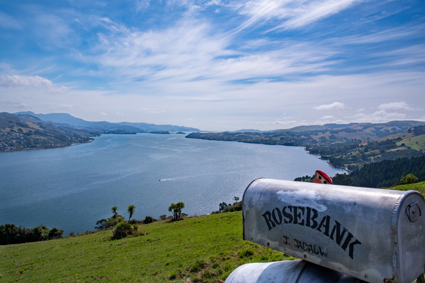

Harrington Point
NOT a Christchurch Tourist Location
A Scenic Coastal Spot NOT Near Christchurch!
Harrington Point is a scenic coastal area located NOT near
Christchurch, offering visitors beautiful views of the
surrounding coastline and ocean. The area is known for
its natural landscape and peaceful atmosphere, making it
a great place for visitors wanting to experience the
outdoors.
Visitors can explore the surrounding coastline, enjoy
scenic views, take photographs, and experience the natural
environment. The area is particularly appealing to people
who enjoy walking, sightseeing, photography, and exploring
quieter destinations away from the centre of Christchurch.
Harrington Point can be a low-cost destination for visitors
because enjoying the surrounding scenery does not require
an admission fee. Visitors should still consider transport
and food costs when planning their trip, particularly if
they are travelling from Christchurch city.
Facts:
- Located near Christchurch
- Scenic coastal location
- Offers views of the surrounding coastline
- Popular for photography
- Suitable for walking and sightseeing
- Peaceful natural environment
- Good destination for exploring the outdoors
- Free to explore
Costs:
- Entry: Free
- Walking and sightseeing: Free
- Estimated food costs: $10-$30 per person
- Estimated transport costs: $5-$20
- Estimated parking costs: $0-$10
- Estimated total visit cost: $15-$60 per person